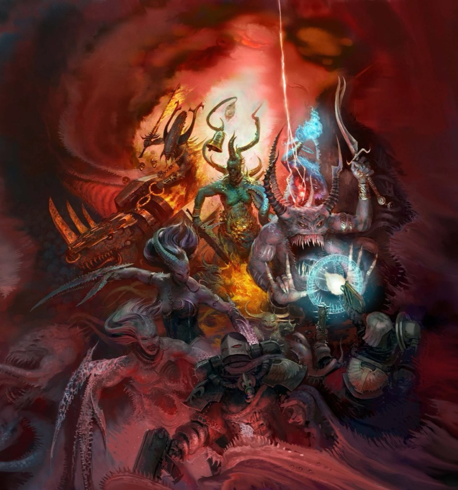
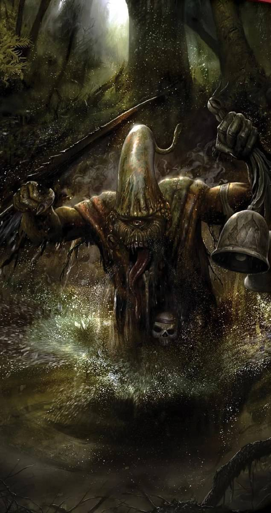
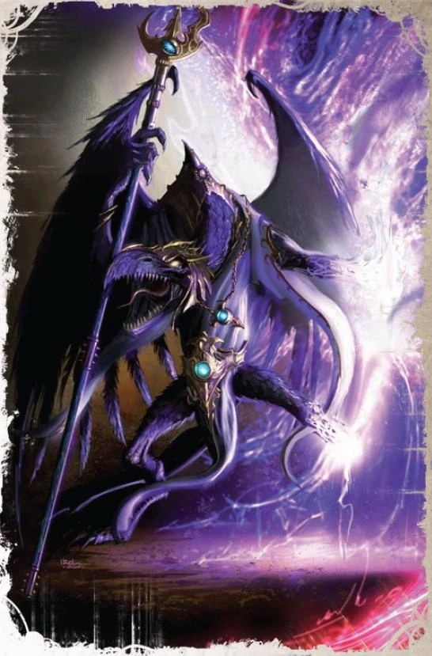

Daemon
| Daemon | |
|---|---|
| Entity of the Warp; servant of the Chaos Gods | |
 The four Greater Daemons at the head of a daemonic host, in an illumination kept by the Ordo Malleus Artwork © Games Workshop | |
| Other names | Neverborn; Warp-spawn; the Neverborn of the Realm of Chaos |
| Origin | The Warp; formed from the essence of a Chaos god |
| Patrons | Khorne, Nurgle, Tzeentch, Slaanesh; Chaos Undivided |
| First recorded | Before recorded history; earliest Imperial records Age of Strife (M25–M30)[a] |
| Ranks | |
| Greater Daemons | Bloodthirster (Khorne); Great Unclean One (Nurgle); Lord of Change (Tzeentch); Keeper of Secrets (Slaanesh) |
| Lesser daemons | Bloodletter; Plaguebearer and Nurgling; Pink Horror; Daemonette |
| Ascended | Daemon Princes; Daemon Primarchs |
| Opposed by | |
| The Grey Knights; the Ordo Malleus of the Inquisition; the Sisters of Silence; the Adepta Sororitas | |
A daemon, also called a Neverborn, is an entity of the Warp formed from the power of one of the Chaos Gods. Daemons are not living creatures in any material sense. Each is a fragment of its god's essence given a will and a shape, and each embodies the emotion from which that god draws its strength: the rage of Khorne, the despair and endurance of Nurgle, the ambition and change of Tzeentch, and the excess of Slaanesh. Daemons can cross into realspace only where the barrier between the Warp and the material universe is weak, or where they are summoned, or where they take possession of a mortal host.[1][2]
The Ordo Malleus divides daemons into ranks. The lesser daemons are the common soldiers of the gods. The Greater Daemons are their generals and favoured servants. Above both stand, in power if not in the gods' regard, the Daemon Princes, mortals raised to daemonhood as a reward for their service, among whom four, and on some accounts five, of the primarchs of the Space Marine Legions are counted as Daemon Primarchs. The opening of the Great Rift in 999.M41 has let daemons into realspace on a scale not seen since the Horus Heresy, and the war against them is now one of the chief burdens of the Era Indomitus.[1][3]
Knowledge of daemons is restricted by the Inquisition. Most citizens of the Imperium of Mankind are taught that daemons do not exist, or that they are the beasts of legend. Those who meet them and survive are often silenced or mind-cleansed.[1]
Nature
[edit]The Warp is a realm of psychic energy that reflects the thoughts and emotions of every thinking being in the material universe. Over countless ages, those emotions gathered into the four great powers that the Imperium calls the Chaos Gods. A daemon is a portion of a god's power that the god has separated from itself. When a daemon is destroyed in realspace, its essence returns to the Warp and to its god, and in time it may be formed again. The Grey Knights teach that a daemon can be banished but very rarely destroyed, and that the only lasting destruction of one is achieved by the extinction of its name.[1][4]
Daemons need a source of Warp energy to hold their form in realspace. Outside a Warp storm, a daemon world or a place of great psychic disturbance they weaken and fade. They may be bound into objects, as daemon engines and daemon weapons, or into a living body, a practice the Inquisition calls daemonic possession. Their true names give power over them, and the Ordo Malleus guards its lists of daemon names as among the most dangerous documents in the Imperium.[1]
Daemons of the four gods
[edit]Khorne
[edit]
The daemons of Khorne, the god of rage and slaughter, are organised in Blood Legions. Their lesser daemons, the Bloodletters, are red-skinned, horned warriors armed with hellblades. Their Greater Daemons, the Bloodthirsters, are winged, bull-headed giants in brass armour, armed with axes and whips, and they are counted the most dangerous fighters among all daemons. The best known are Skarbrand, the Exiled One, once the greatest of them, and Ka'Bandha, the old enemy of the Blood Angels, who fought Sanguinius at Signus Prime in c. 006.M31 and at the Siege of Terra in 014.M31.[1][5]
Nurgle
[edit]
The daemons of Nurgle, the god of disease and decay, are the most patient and in their way the most cheerful of all daemons. The lesser daemons called Plaguebearers, or Tallymen, are one-eyed, single-horned creatures who count the diseases of the galaxy without end. Swarms of small daemons called Nurglings accompany them. Their Greater Daemons, the Great Unclean Ones, are vast, bloated beings that care for their followers as a parent cares for children. Nurgle's daemons led the invasion of Ultramar in the Plague Wars of the early Era Indomitus (c. 999.M41–c. 012.M42).[1][3]
Tzeentch
[edit]

The daemons of Tzeentch, the god of change and sorcery, are the most magical. The lesser daemons called Pink Horrors are capering, many-armed beings that hurl Warp fire, and when one is slain it splits into two sullen Blue Horrors, and these in turn into flickering Brimstone Horrors. The Greater Daemons are the Lords of Change: tall, feathered, bird-headed sorcerers who see the threads of fate and weave plots across millennia. The greatest of them is Kairos Fateweaver, the two-headed Oracle of Tzeentch.[1]
Slaanesh
[edit]The daemons of Slaanesh, the youngest god, born in the Fall of the Aeldari in M30, are beautiful and terrible at once. The lesser Daemonettes are lithe, androgynous beings with claws, who fight with a dancer's grace. The Greater Daemons are the Keepers of Secrets, many-armed, horned beings that enthral those who look on them. The hosts of Slaanesh became more active after the god was reported to have been weakened, or by some accounts imprisoned, in the closing years of M41, and their princes and Keepers have fought among themselves since.[1][3][b]
Heralds and others
[edit]Between the lesser and Greater Daemons stand the Heralds, greater-than-common daemons who lead the lesser hosts. Besides the daemons of a single god there are beasts of the Warp, such as the Furies, which serve all the gods, and daemons bound into war engines, the daemon engines built by the Dark Mechanicum and the Warpsmiths of the Chaos Space Marines.[1]
Daemon Princes
[edit]
A Daemon Prince is a mortal champion who has been raised to daemonhood by a Chaos God. Many champions of Chaos seek this reward, but most who are judged by the gods fail and become Chaos Spawn, mindless masses of mutated flesh. Those who succeed gain immortality and great power, but they lose their freedom: a Daemon Prince is bound to the Warp like any other daemon and can only rarely enter realspace without help.[1][2]
The first Daemon Prince is held to be Be'lakor, the Dark Master, who was raised by all four gods together at a date before recorded history. Since then thousands of others have been raised. Many rule daemon worlds in the Eye of Terror and the Maelstrom, and some, such as Doombreed, Herald of Khorne, and M'kar the Reborn, who attacked Ultramar in M41, are remembered by name in the Malleus records.[1]
Daemon Primarchs
[edit]The Daemon Primarchs are the primarchs of the Traitor Legions who were raised to daemonhood. The Imperial record names the following.
| Daemon Primarch | Legion | Patron | Ascension |
|---|---|---|---|
| Angron | World Eaters | Khorne | During the Shadow Crusade, c. 008.M31[c] |
| Fulgrim | Emperor's Children | Slaanesh | At Iydris, c. 008.M31[c] |
| Magnus the Red | Thousand Sons | Tzeentch | After the Burning of Prospero, c. 006–008.M31[c] |
| Mortarion | Death Guard | Nurgle | Late in the Heresy, c. 012–014.M31[c] |
| Lorgar | Word Bearers | Chaos Undivided | After the Heresy; date sealed by the Inquisition |
| Perturabo | Iron Warriors | Disputed | Disputed; some records deny it took place |
The return of the Daemon Primarchs to realspace has marked each stage of the present age: Magnus at the Fall of Cadia and on Prospero in 999.M41, Mortarion in the Plague Wars, Angron in the Arks of Omen, and Fulgrim on the borders of the Great Rift in the early Era Indomitus.[3]
Daemonic incursions
[edit]When the barrier between realms gives way, daemons enter realspace in numbers. The Inquisition calls this an incursion. A minor one may be contained by local forces; a major one may consume a world, which then becomes a daemon world and is lost to the Imperium. The greatest incursions of Imperial history include the outbreak of daemons across the galaxy during the Horus Heresy (005–014.M31), the Siege of Terra, the Age of Apostasy, the Thirteenth Black Crusade, and the opening of the Great Rift in 999.M41, which flooded whole sectors with the Neverborn.[5][3]
The Imperial response
[edit]The Imperium fights daemons with a small number of specialised institutions. The Ordo Malleus of the Inquisition investigates and suppresses daemonic activity. The Grey Knights, the Chamber Militant of the Ordo Malleus, are psykers trained and armed to fight daemons hand to hand. The Sisters of Silence and other pariahs are protected from daemonic influence by their own nature, and the faith of the Adepta Sororitas has been recorded to weaken the Neverborn. When all else fails, the Inquisition may order a world destroyed by Exterminatus.[1][4]
Timeline
[edit]| Date | Event |
|---|---|
| Before recorded history | Be'lakor raised as the first Daemon Prince |
| M30 | Birth of Slaanesh in the Fall of the Aeldari; the Eye of Terror opens |
| c. 006.M31 | Ka'Bandha defeats Sanguinius at Signus Prime |
| c. 006–014.M31 | Angron, Fulgrim, Magnus the Red and Mortarion raised as Daemon Primarchs[c] |
| 014.M31 | Daemon hosts at the Siege of Terra; Sanguinius breaks Ka'Bandha |
| Early M31 | The Grey Knights established on Titan (date sealed; estimated from the end of the Heresy) |
| 999.M41 | Fall of Cadia; the Great Rift opens and daemons pour into realspace |
| 999.M41 | Kairos Fateweaver captures Roboute Guilliman in the Maelstrom; Skarbrand defeated by him |
| c. 999.M41–c. 012.M42 | The Plague Wars in Ultramar |
| Early M42 | The Arks of Omen; Angron banished by Lion El'Jonson |
See also
[edit]Notes
[edit]- ^ No Imperial archive records the first appearance of a daemon. The Ordo Malleus holds that daemons have existed for as long as there have been thinking beings to feel the emotions that sustain them.
- ^ Imperial records of the condition of Slaanesh after 999.M41 are contradictory. Reports from the Eye of Terror describe both a silence in the god's realm and an increase in the activity of its servants.
- ^ a b c d e Ascension dates of the primarchs are estimated from the sequence of events in the Heresy; no Imperial archive gives an exact year.
References
[edit]- ^ a b c d e f g h i j k l m McNeill, Graham. The Chapter's Due (novel). Black Library, Ch. 24. Codex: Chaos Daemons (8th Edition), pp. 6-9, 10-31, 43, 46, 130. Games Workshop.
- ^ a b Codex Heretic Astartes - Chaos Space Marines (8th Edition), pg. 92. Games Workshop. Abnett, Dan. Malleus (novel). Black Library.
- ^ a b c d e Codex: Chaos Daemons (6th Edition), pp. 6-24. Games Workshop. Codex: Chaos Daemons (4th Edition), pp. 4-13. Games Workshop.
- ^ a b Codex: Chaos Space Marines (3rd Edition, 1st Codex). Games Workshop. Codex: Chaos Space Marines (3rd Edition, Revised Codex). Games Workshop.
- ^ a b Wylie, Neil et al.. The Horus Heresy Book Eight - Malevolence (Forge World Series). Black Library, pp. 9-16, 28. Codex: Daemonhunters (3rd Edition). Games Workshop.